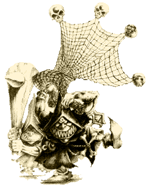

| |
Éjgoblin hálóvetõk
A barlangokból, ahol
az éjgoblinok élnek, számtalan régi és
felfedezetlen folyosó, hasadék ágazik szerte.
Ezek némelyike vagy a felszínre vezet vagy
vakfolyosó, míg más járatok eltûnnek valahol
a hegy sötétjében...
|  |
Ez utóbbi barlangok számtalan
veszélyt tartogatnak az óvatlan
behatoló számára, ugyanis nagy a valószínûsé-
ge, hogy valamilyen rettenetes
teremtmény lakhelyét képezik. Bár az
éjgoblinok tisztában vannak a reájuk
leselkedõ veszélyekkel, muszáj aláereszkedniük
ezen mély tárnákba, hogy ott
egzotikus gombaféléket gyûjt- senek.
Végül is ez a szûkség hívta életre
a hálóvetõ osztagokat. ezek az egységek
hálóval és bunkósbottal
felfegyverzett goblinokból állnak, a
feladatuk pedig az, hogy a veszélyes szörnyetegeket
mozgásképtelenné tegyék majd elpusztítsák.
Késõbb aztán hússzerzési és üzleti
célból is útnak indították a hálóvetõ
osztagokat. A squigek húsa ínyenc
falatnak számít, az élve elfogott
fenevadakat pedig pénzzé lehet tenni. A
hálóvetõ osztag tagjai persze harcban
is szeretik bizonyítani rátermettségüket, így az éjgoblin hadvezérek
gyakran alkalmazzák õket. |
Speciális szabályok:
Ha sereged legalább egy éjgoblin
osztagot tartalmaz, akkor alkalmazhatsz egy hálóvetõ
osztagot is. Az osztag 5 vagy több fõbõl áll,
belátásod szerint. Minden modell három és fél
pontot ér. az egységet természetesen irányíthatja
egy fõnök, aki bunkóval van felfegyverezve, ez
+1 ponttal növeli az egység értékét.
Karakterprofil
Mint más goblinoké.
Alakzat
A hálóvetõk öt vagy több éjgoblint
számláló egységben harcolnak. Mindegyik goblin
fel van fegyverezve, némelyik bunkóval, némelyik
pedig hálóval. az osztag annyi hálós vagy bunkósbotos
harcost tartalmaz, amennyit jónak látsz. A
sorokat nem muszáj egyféle fegyverrel felszerelt
model- leknek alkotnia, tehát a bunkók és a hálók
arányát neked kell eldöntened. Mivel ezekkel a
gob- linok kissé eltérõen harcolnak, ez az arány
döntõ jelentõségû lehet. Az osztag úgy mozog
és harcol, mint bármely más goblin egység. Ha
az osztag több sorból áll, mindig az elsõ sor
harcol. Csak azok a modellek harcolhatnak,
amelyeknek a talpa érintkezik valamely ellenséges
modell alapjával. Ha a hálóvetõ osztagból
valakit lemészárolnak, bármelyik küzdõ
modellt leveheted és behelyettesítheted a hátsó
sorból, így tudod változtatni a hátsó sorban
lévõ hálós és bunkós goblinok arányát.
(Mondjuk leveszel egy hálóst és a helyére
teszel egy bunkóst.)
Hálós goblinok
A hálóval felszerelt goblinok +1
kezdeményezés bónuszt élveznek és mindig a
bunkóval felszerelt társaik elõtt támadnak. A
támadást a szokott módon kell kidolgozni. Bár
a találatok nem okoznak sérülést, jegyezd fel
õket, mert szûkség lesz még rájuk a késõbbiek
folyamán. A hálóval eltalált ellenfelek
cselekvésképtelenek abban a körben, melyben a
találatot kapták. Nem képesek vissza- támadni,
ezért kitûnõ célpontot nyújtanak a bunkósbottal
felszerelt goblinoknak (lásd lentebb).
Bunkós goblinok
A bunkóval felszerelt goblinok +1 erõbónuszra
jogosultak, így támadásuk ereje 4-es. Dolgozd
ki a támadást, mint rendesen. Miután
feljegyezted, hány ellenséges modellt sikerült
eltalálnod a bun- kósbotokkal, add hozzá a
kapott számhoz a hálóval elért találok számát.
A bunkós goblinok, min- den elõzõleg behálózott
ellenfélért kapnak egy extra találatot, tehát
az összes találat értékéért sebeznek (pl.:
ha az osztag négy ellenfelet talált el hálóval
és kettõt a bunkókkal, akkor összesen hat találatot
értek el, tehát, ha szerencséjük van hatszor képesek
sebezni). ezen ütések mindegyi- kére érvényes
a +1 erõbónusz, a bunkóval elért találatok számától
függetlenül. Ha viszont az elsõ sorban nincs
bunkóval felfegyverzett goblin vagy van, de nem
ért el találatot, akkor maguk a hálósok
ugranak rá a magatehetetlen áldozatokra és
sebzik õket 3-as erõsséggel, mint rendesen.
Mindegyik hálóval mozgásképtelenné tett
modell, akit nem mészároltak le, automatikusan
kisza- badítja magát és nem számít behálózott
modellnek, tehát a következõ körben akár
harcolhat is.
Lövés a hálóvetõ osztagokra
Midõn a gaz ellenség nem átall a te hálóvetõ
osztagodra lõni, esetleges találatai vaktában
érik a lehetséges célpontokat (elsõ sort), ezért
kockadobással döntsd el, kik esnek áldozatul a
nyílzápornak. Például, ha négy hálós és két
bunkós goblin alkotja az elsõ sort, dobk egy
D6-ot és járj el a következõk szerint: 1,2,3,4
egy hálóval felszerelt goblint talál el; 5,6:
egy bunkós goblint lõttek le.
írta: Gabesz (Troll melléklet,
Holdtölte magazin 4. évf. 6. szám)
|
|